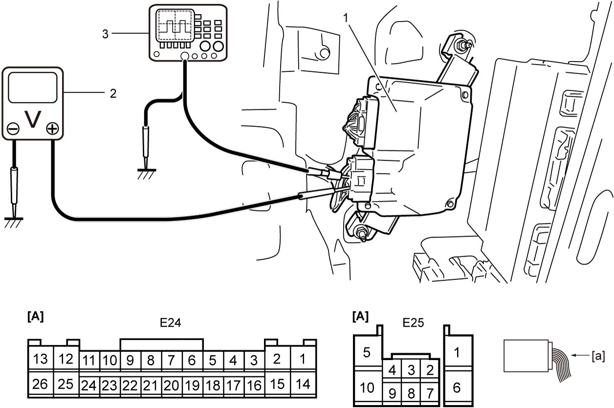
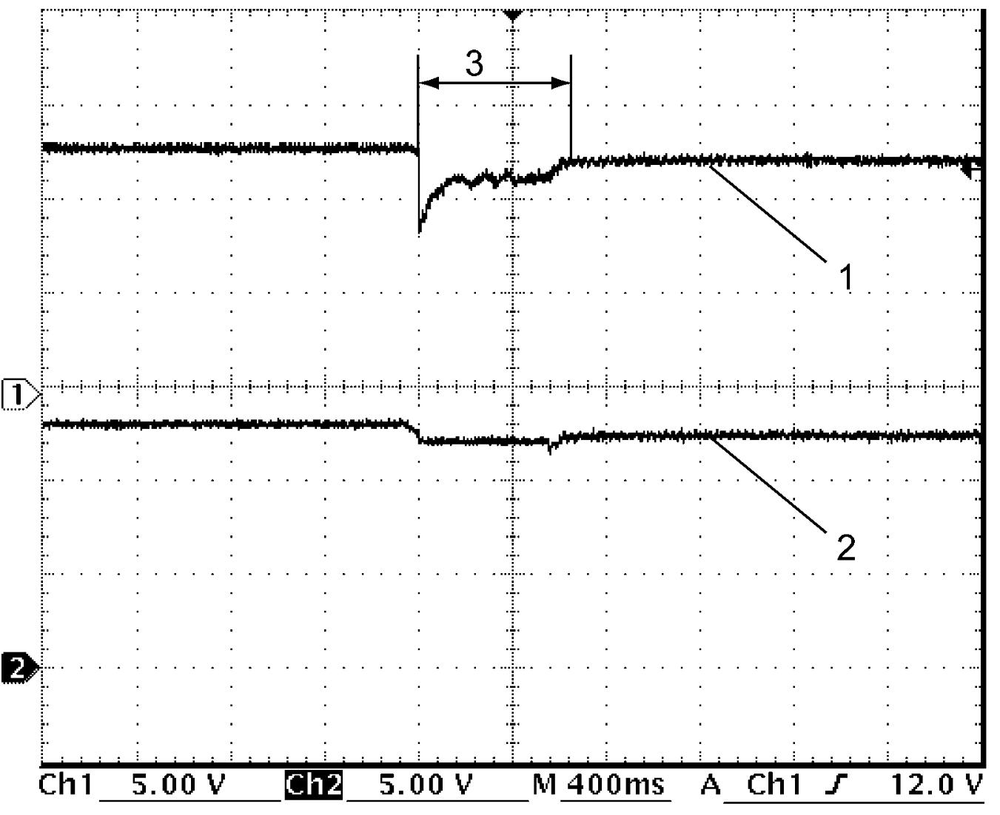

10I
| Inspection of ENG A-STOP Control Module and Its Circuits |
Voltage and Signal Check
Check voltage and/or pulse signal of ENG A-STOP control module (1) using voltmeter (2) and oscilloscope (3).
NOTE:
•Check that battery voltage is 12 V or more.
•The voltage of terminal with asterisk (*) cannot be measured by voltmeter because it is pulse signal. Check it with oscilloscope if necessary.
•The voltage of terminal with asterisk (*) cannot be measured by voltmeter because it is pulse signal. Check it with oscilloscope if necessary.

 "Expand image")
| [A]: | ENG A-STOP control module connector (View: [a]) |
“E24” connector
| Terminal No. | Wire color | Circuit | Normal voltage | Condition |
|---|---|---|---|---|
| E24-1 | WHT | Backup power supply | 10 – 14 V | — |
| E24-2 | PPL | CPP No.2 switch signal (M/T model) | Approx. 0 V | Ignition: “ON” Clutch pedal: Depressed |
| 10 – 14 V | Ignition: “ON” Clutch pedal: Released |
|||
| DC/DC converter ON signal (A/T model) | Approx. 2 V | Ignition: “ON” | ||
| Approx. 0 V | Other than above condition | |||
| E24-3 | PNK | Neutral position switch signal (+) (M/T model) | 10 – 14 V | Ignition: “ON” Gear position: Other than “Neutral” |
| 3 – 5 V | Ignition: “ON” Gear position: “Neutral” |
|||
| E24-4 | WHT | Ignition “ON” signal | 10 – 14 V | Ignition: “ON” |
| Approx. 0 V | Other than above condition | |||
| E24-5 | BRN | Ignition “ACC” signal | 10 – 14 V | Ignition: “ACC” or “ON” |
| Approx. 0 V | Other than above condition | |||
| E24-6* | RED | CAN communication signal (High) | Refer to CAN communication signal. | |
| E24-7* | RED | CAN communication signal (High) | Refer to CAN communication signal. | |
| E24-8 | LT BLU | Power supply for electric load current sensor | 4 – 6 V | Ignition: “ON” |
| Approx. 0 V | Other than above condition | |||
| E24-9 | — | — | — | — |
| E24-10 | GRN | Electric load current sensor signal | 2.3 – 2.5 V | Ignition: “ON” |
| 2.1 – 2.3 V | Ignition: “ON” Headlight: ON |
|||
| 1.9 – 2.1 V | Ignition: “ON” Headlight: ON Blower speed selector: MAX |
|||
| E24-11 | YEL | Ground for electric load current sensor & battery temperature sensor | Approx. 0 V | — |
| E24-12 | — | — | — | — |
| E24-13 | BLU | Starting motor control relay signal (+) | 10 – 14 V | Starting motor operated (using “Starting Motor” of “Active Test” mode on SUZUKI scan tool) |
| 2.5 – 3.5 V | Other than above condition | |||
| E24-14 | BLK | Ground for ENG A-STOP control module | Approx. 0 V | — |
| E24-15 | GRN | CPP No.1 switch signal (M/T model) | 10 – 14 V | Ignition: “ON” Clutch pedal: Released |
| Approx. 0 V | Ignition: “ON” Clutch pedal: Depressed fully |
|||
| Brake light switch signal (A/T model / twin clutch system model) | Approx. 0 V | Ignition: “ON” Brake pedal: Released |
||
| 10 – 14 V | Ignition: “ON” Brake pedal: Depressed |
|||
| E24-16 | YEL | Neutral position switch signal (–) (M/T model) | 3 – 5 V | Ignition: “ON” Gear position: “Neutral” |
| Approx. 0 V | Other than above condition | |||
| DC/DC converter diagnosis signal (A/T model) | 10 – 14 V | Ignition: 1 sec. after ignition “OFF” | ||
| Approx. 0 V | Other than above condition | |||
| E24-17 | BLU | ENG A-STOP OFF switch signal | 10 – 14 V | Ignition: “ON” ENG A-STOP OFF switch: Pushed |
| Approx. 0 V | Ignition: “ON” ENG A-STOP OFF switch: Released |
|||
| E24-18 | PNK | Ignition “ST” signal (ignition switch model) | 10 – 14 V | Ignition: “ST” |
| Approx. 0 V | Other than above condition | |||
| E24-19* | WHT | CAN communication signal (low) | Refer to CAN communication signal. | |
| E24-20* | WHT | CAN communication signal (low) | Refer to CAN communication signal. | |
| E24-21 | — | — | — | — |
| E24-22 | — | — | — | — |
| E24-23 | PNK | Battery temperature sensor signal | 2.0 – 2.3 V | Ignition: “ON” Battery temperature: 25 °C (77 °F) |
| 0.3 – 0.5 V | Ignition: “ON” Battery temperature: 90 °C (194 °F) |
|||
| E24-24 | — | — | — | — |
| E24-25 | — | — | — | — |
| E24-26 | PNK | Starting motor control relay signal (–) | Approx. 0 V | Starting motor operated (using “Starting Motor” of “Active Test” mode on SUZUKI scan tool) |
| 2.5 – 3.5 V | Other than above condition | |||
“E25” connector
| Terminal No. | Wire color | Circuit | Normal voltage | Condition |
|---|---|---|---|---|
| E25-1 | BLK | Ground for ENG A-STOP control module | Approx. 0 V | — |
| E25-2 | — | — | — | — |
| E25-3 | GRN | Hood latch switch 1 signal | Approx. 0 V | Ignition: “ON” Hood latch: Fully latched |
| 10 – 14 V | Ignition: “ON” Hood latch: Latch released |
|||
| E25-4 | — | — | — | — |
| E25-5 | YEL | Internal DC/DC converter output | 10 – 14 V | — |
| Refer to Internal DC/DC converter signal. | ||||
| E25-6 | RED | Internal DC/DC converter power supply | 10 – 14 V | — |
| Refer to Internal DC/DC converter signal. | ||||
| E25-7 | — | — | — | — |
| E25-8 | BLU | Hood latch switch 2 signal | Approx. 0 V | Ignition: “ON” Hood latch: Latch released |
| 10 – 14 V | Ignition: “ON” Hood latch: Fully latched |
|||
| E25-9 | — | — | — | — |
| E25-10 | GRN | Internal DC/DC converter output | 10 – 14 V | Ignition: “ACC” or “ON” |
| Approx. 0 V | Other than above condition | |||
| Refer to Internal DC/DC converter signal. | ||||
Reference Waveform
Oscilloscope display
Shown below is typical waveform display provided by oscilloscope.
NOTE:
•Display includes the following types of data:


•Waveform varies depending on measurement condition and vehicle spec.
 "Expand image")
| [a]: | Waveform of channel 1 | [c]: | VOLT/DIV of each channel |
| [b]: | Ground level of each channel | [d]: | TIME/DIV |
CAN communication signal
CAN communication signal (High) (1)
| Channel | Probe | Terminal No. |
|---|---|---|
| 1 | + | E24-6 E24-7 |
| – | E24-14 |
CAN communication signal (Low) (2)
| Channel | Probe | Terminal No. |
|---|---|---|
| 2 | + | E24-19 E24-20 |
| – | E24-14 |
Measurement condition
•Ignition: “ON”

 "Expand image")
Internal DC/DC converter signal
Internal DC/DC converter power supply (1)
| Channel | Probe | Terminal No. |
|---|---|---|
| 1 | + | E25-6 |
| – | E25-1 |
Internal DC/DC converter output (2)
| Channel | Probe | Terminal No. |
|---|---|---|
| 2 | + | E25-5 E25-10 |
| – | E25-1 |
Measurement condition
•Starting motor: Operated (using “Starting motor” of “Active Test” mode on SUZUKI scan tool)

 "Expand image")
| 3. | In execution of “Starting Motor” |